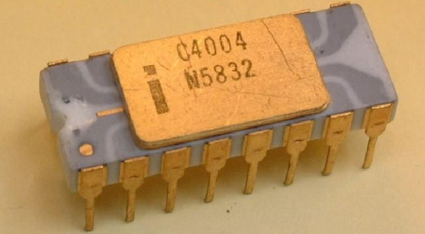

💾 Era Mikroprosesor: Komputer dalam Satu Chip
Penciptaan mikroprosesor adalah titik balik monumental dalam sejarah komputasi. Integrasi seluruh komponen CPU—unit kontrol, ALU, dan register—ke dalam satu kepingan silikon tunggal mengubah komputer dari mesin seukuran ruangan menjadi perangkat yang dapat diletakkan di atas meja. Dimulai dengan Intel 4004 pada tahun 1971, inovasi ini memicu revolusi komputer pribadi dan memulai perlombaan kinerja yang telah berlangsung selama lebih dari lima dekade.
💡 Fakta Menarik: Awalnya untuk Kalkulator
Mikroprosesor pertama di dunia, Intel 4004, awalnya tidak dirancang untuk komputer. Intel dikontrak oleh perusahaan Jepang, Busicom, untuk membuat serangkaian chip untuk kalkulator berperforma tinggi. Tim Intel berhasil mengintegrasikan semua logika ke dalam satu chip tunggal, dan lahirlah mikroprosesor yang kemudian mengubah dunia.
Evolusi Arsitektur Intel x86 yang Legendaris
Evolusi arsitektur Intel x86 menjadi cerminan dari lintasan Hukum Moore yang sedang beraksi. Tabel berikut menyoroti beberapa lompatan penting:
| Prosesor | Tahun | Transistor | Lebar Data | Inovasi Kunci |
|---|---|---|---|---|
| 4004 | 1971 | 2.300 | 4-bit | CPU komersial pertama dalam satu chip. |
| 8086 | 1978 | 29.000 | 16-bit | Melahirkan arsitektur x86 yang dominan. |
| 80386 | 1985 | 275.000 | 32-bit | Fondasi OS modern dengan paged virtual memory. |
| Pentium | 1993 | 3,1 juta | 32-bit | Arsitektur superscalar (eksekusi instruksi paralel). |
| Pentium Pro | 1995 | 5,5 juta | 32-bit | Memperkenalkan eksekusi spekulatif dan prediksi cabang. |
| Core 2 Duo | 2006 | 167 juta | 64-bit | Arsitektur multi-core 64-bit pertama yang efisien. |
| Core i7 | 2008 | 731 juta+ | 64-bit | Integrasi memory controller & QuickPath Interconnect. |